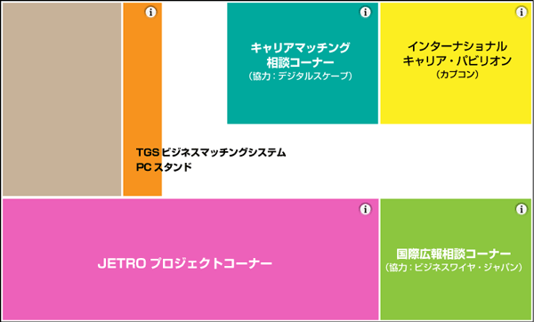

海外進出する企業、日本市場で活躍の場を広げたい国内外ビジネスパーソンのためのエリア
国際ビジネス相談コーナー/インターナショナル・キャリアパビリオンは、海外市場に進出される日本企業の方、日本市場で活躍の場を広げたい国内外のビジネスパーソンが集まるエリア（4日間開催）です。国際的な人材発掘を促進するインターナショナル・キャリアパビリオンでは、カプコンが出展します。
キャリア相談コーナーでは、デジタルスケープの協力により、国内ゲーム市場におけるキャリア相談を受け付けます。
国際広報相談コーナーでは、ビジネスワイヤ・ジャパンの協力により、国際的な情報発信機能に関する相談を受け付けます。
JETROプロジェクトコーナーでは、Game ConnectionのJETROブースに出展した企業が集まり、国際的な商談の場として活用します。
会場マップ

各コーナーの内容
キャリアマッチング相談コーナー
| 対象 | ゲーム業界を中心とするコンピュータ・エンタテインメント・ビジネスに携わる企業・個人の開発関係者、人事関係者や求職・転職希望者の方々。 |
|---|---|
| 内容 | ・開発パートナー、企業間でのアライアンスをご検討の方々のマッチング相談 ・企画、技術、サービスなどを保持し、ビジネスデベロップメントをご検討の方々のマッチング相談 ・求職・転職者向けキャリアコンサルティング及び、企業の人材獲得戦略に関するご相談 |
| 相談料 | 無料 ※予約受付は終了しております。 |
協力：株式会社デジタルスケープ（http://www.dsp.co.jp/）
国際広報相談コーナー
| 対象 | ゲーム業界を中心とするコンピュータ・エンタテインメント・ビジネスに携わる企業・団体の方々。 ・自社のブランド、情報、製品を国内外に広めたい企業 ・外国人投資家に自社情報を届けたい企業 |
|---|---|
| 内容 | ・広報・投資家向け活動をご検討中の方々のマッチング相談 ・国内市場向け広報活動・投資家向け広報活動に関するご相談 ・海外市場向け広報活動・投資家向け広報活動に関するご相談 ・プレスリリースの書き方や配信に関するご相談 |
| 相談料 | 無料 |
協力：ビジネスワイヤ・ジャパン株式会社（http://www.businesswire.jp/）
JETROプロジェクトコーナー
| 対象 | JETROが実施した「Game Connection」プロジェクトに参加した日本企業とのミーティングを望む国内外のゲーム関連企業の方々。 |
|---|---|
| 内容 | 2010年3月に開催したGame Connectionから半年後のTGSにおいて、各社が持つプロジェクトを進めるために、同ブース内やビジネスミーティングコーナー（ホール2）にて、具体的な商談ができます。また、2011年以降のJETROプロジェクトに関する情報も集められます。 |
| 参加企業 | ヴァンガード株式会社（http://www.vgd.co.jp/） 株式会社リズ（http://www.riz.co.jp/） その他 |
インターナショナル・キャリアパビリオン
| 出展社 | 株式会社カプコン |
|---|---|
| 内容 | カプコンは家庭用ゲームソフトの開発・販売を中核事業とし、数多くのオリジナルコンテンツを世界に送り出しています。 世界的なブランド力をより強化すべく、社員に対し海外での活躍の場を積極的に提供しています。当ブースでは国内外問わず、カプコンに興味をお持ちのクリエイターの方のキャリア相談をお受けいたします。どうぞお立ち寄りください。 For those traveling from abroad: Japanese language ability is a prerequisite at Capcom.Parties interested in meeting with recruiters are required to speak at least a daily conversation level of Japanese. |
TGSビジネスマッチングシステム・PCスタンド
TGSビジネスマッチングシステムを手軽に使うことができるPCスタンド。
アポイントの確認や、必要なメール情報などを確認できます。無料ですので、ご自由にお使い下さい。
（協力：オフィシャルPCスポンサー／日本エイサー）